Compressor...?
If the audio signal level exceeds the threshold,
Compressor compresses the signal by a ratio value.
Experts says...
Compressor is not just for compressing an audio signal level.
It changes character and nuance of a sound.
Terminology
Threshold
Ratio
Attack Time
Release Time
Threshould
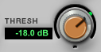If an input signal level exceeds threshold level,
Compressor starts to compress the input signal.
Ratio = 3 : 1
Attack Time = 10ms
Release Time = 80ms
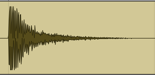
Threshold : 0dB = Original
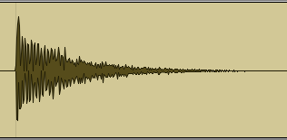
Threshold : -12dB
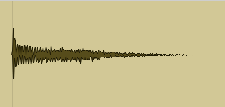
Threshold : -24dB
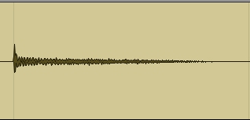
Threshold : -36dB
You can find that entire audio level is changed.
Ratio
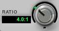If an input signal level is 6dB, Threshold level is 0
and Ratio is 2:1, the output signal level becomes 3dB.
Treshold = -18dB
Attack Time = 10ms
Release Time = 80ms
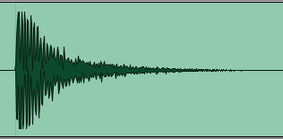
Ratio = 1:1 = Original
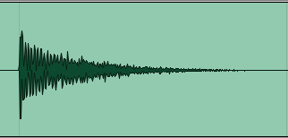
Ratio = 2:1
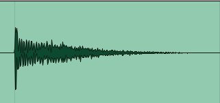
Ratio = 4:1
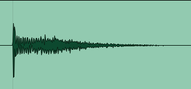
Ratio = 16:1
You can find that entire audio level is changed,
but the attack of sound still exists.
Attack Time
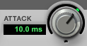Attack Time is the time Compressor takes to start.
Treshold = -18dB
Ratio = 4 : 1
Release Time = 80ms
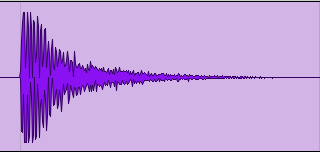
Original
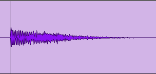
Attack Time : 1ms
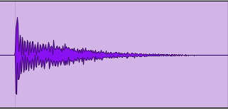
Attack Time : 20ms
Attack Time : 200ms
You can find that attack of sound is changed.
Release Time
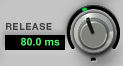Release Time is the time Compressor takes to stops.
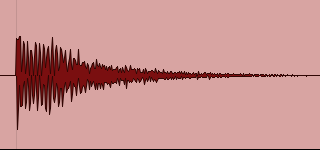
Release Time : 5ms
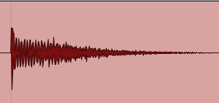
Release Time : 50ms
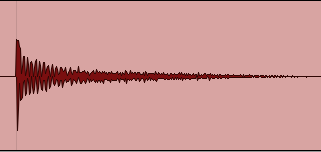
Release Time : 300ms
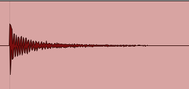
Release Time : 1s
You can find that tail of sound is changed.
Try other sources...!!!
These examples are from just one kick drum sound.
If you try with other sounds, you can understand more about Compressor.